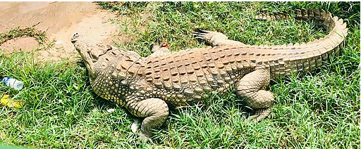

Introduction
This website provides an overview of the geography of the Democratic Republic of the Congo, (which has one of the most diverse ranges of creatures in the world), its habitats and a snapshot of the animals that inhabit them.
Attributions: Stnts256, CC BY-SA 4.0, via Wikimedia Commons
Sections on this page

Attributions: Robert01, CC BY-SA 3.0 DE, via Wikimedia Commons